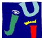
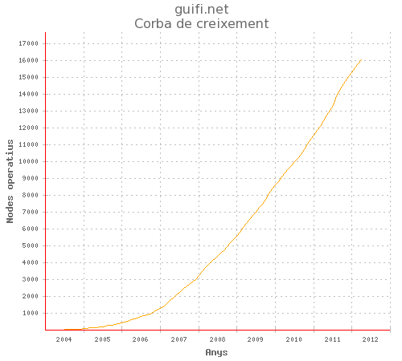
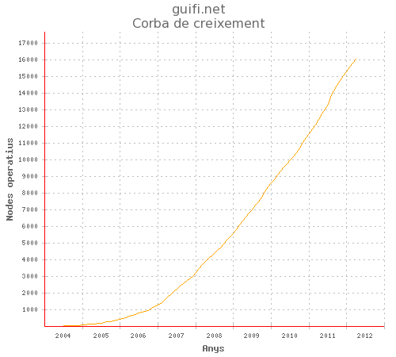
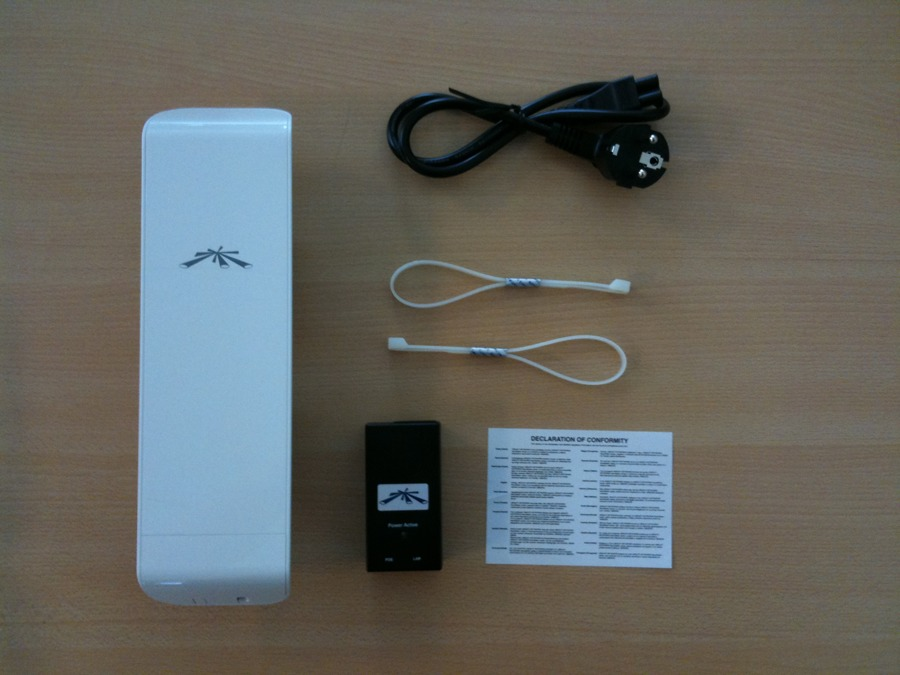
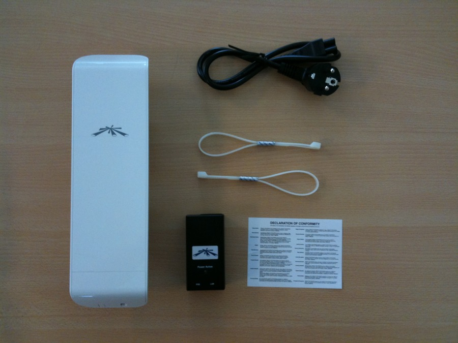

iParty 13
guifi.net
Taller de iniciación y primeros pasos

Apreta la tecla → para avanzar.
Guifi.net es una red de telecomunicaciones libre, abierta y neutral, mayoritariamente inalámbrica, con más de 23.600 nodos, de los cuales más de 16.000 están operativos.
Licencia procomún de la Red Abierta, Libre y Neutral:
 

Cambia de foto con las teclas: ↑ y ↓
Actualmente en Castellón hay 271 (2010), 1012 (2011), 2.398 (2012) nodos activos y 175 (2010), 363 (2011), 954 proyectados.
Para conectar como clientes a la red necesitamos lo siguiente:
 



Cambia de foto con las teclas: ↑ y ↓
Una vez conectado a la red, lo más demandado es conectar a Internet. Esto se puede lograr mediante alguna de las siguientes opciones:
Ni mucho menos, la red libre tiene otras muchas utilidades:
Páginas web:
Lista de correo de usuarios de Castellón: